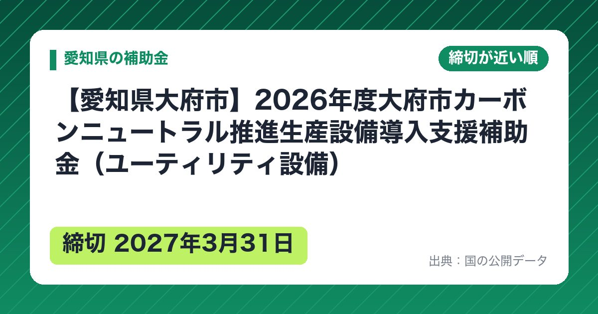

【愛知県大府市】2026年度大府市カーボンニュートラル推進生産設備導入支援補助金（ユーティリティ設備）

締切 2027年3月31日｜上限 100万円
概要
| 対象地域 | 大府市 |
|---|---|
| 補助上限額 | 100万円 |
| 補助率 | 3分の1以内 |
| 受付期間 | 2026年4月1日 〜 2027年3月31日 |
| 対象の従業員数 | 従業員数の制約なし |
| 利用目的 | 設備整備・IT導入をしたい / エコ・SDGs活動支援がほしい |
| 対象業種 | 製造業 |
| 実施機関 | 大府市カーボンニュートラル推進生産設備導入支援補助金 |
公募の内容（原文の抜粋）
■参照ホームページ
Jグランツで本補助金の申請受付を行っておりません。申請手続き等の詳細については、以下HPをご確認ください。
https://www.city.obu.aichi.jp/jigyo/sangyo_shinko/sogyo_yushi/1025487.html
■目的・概要
市内で製造業を営む中小企業者の設備更新による光熱費等削減及び生産性の向上による競争力強化を実現するとともに、事業者の脱炭素経営を支援するため、エネルギー消費効率の高い設備への更新費用を補助します。
■補助対象者
市内で製造業に属する事業を主たる事業として営む中小企業者等のうち、次のいずれにも該当するものとします。
(1)代表者及び従業員が暴力団員（大府市暴力団排除条例（平成23年大府市条例第21号）第2条第2号に規定する暴力団員をいう。）又は暴力団（同条第1号に規定する暴力団をいう。）若しくは暴力団員と密接な関係を有する者でないこと。
(2)市税を滞納していないこと。
(3)国、県又はその他の関係機関から補助金等の交付を受けていないこと。ただし、当該補助金等と補助金の交付の対象となる経費が重複していない場合は、補助対象とします。
(4)国の中小企業等に対するエネルギー利用最適化推進事業費補助金による事業に基づき一般財団法人省エネルギーセンターが実施する省エネ最適化診断等を、交付要綱第8条の規定による事業計画認定申請の日以前2年の間に受診したことがあること。
(5)みなし大企業に該当しないこと。
(6)独立行政法人中小企業基盤整備機構が運営する経営自己診断システムにおける連続する直近2か年の決算情報に基づく総合分析結果において収益性の平均得点が直近2か年平均で8.0未満であること。
(7)同一年度内に交付要綱第9条第1項に規定する事業計画の認定を受けていないこと。
■補助対象事業
中小企業者等が省エネ診断の結果に基づき、既存の設備から補助対象設備へ更新する事業であって、次のいずれにも該当するものとします。
(1)事業計画の認定の日において着手していないもの
(2)事業計画の認定の日の属する年度の翌年度の2月末までに完了するもの
■補助対象設備
補助対象となる設備は、市内の事業所に設置する以下のユーティリティ設備とします
・高効率空調、産業ヒートポンプ、業務用給湯器、高性能ボイラ、高効率コージェネレーション、 変圧器、冷凍冷蔵設備、産業用モータ、制御機能付きLED、照明器具
※上記のカテゴリで国の省エネルギー投資促進支援事業（一般社団法人 環境共創イニシアチブ）の『（3..）設備単位型』の補助対象設備に登録されている設備が対象。
※設備の登録型番が記載されたWEB ページを印刷したものを事業計画へ添付が必要となります。
補助対象設備検索ページ（一般社団法人 環境共創イニシアチブのウェブサイト）
https://sii.or.jp/setsubi06r/search/
■補助上限額
100万円
※補助対象経費が45万円以上となるものに限ります。
■補助率
3分の1以内
■受付期間
随時受付（2026年4月1日から）
※予算額の範囲内において先着順で補助対象者を決定します。
■申請方法
郵送もしくは窓口での提出により申請してください。
送付先：〒474-8701 大府市中央町五丁目70番地
大府市役所商工業ウェルネスバレー推進課宛
※市役所提出前に必ず大府商工会議所の確認を受けてください。
■お問合わせ先
大府市 産業振興部 商工業ウェルネスバレー推進課
住所：〒474-8701 大府市中央町五丁目70番地
電話番号：0562-45-6227
FAX：0562-47-7320
申請前の準備
- GビズIDプライム（電子申請に必須・無料・発行まで1〜2週間かかることあり）：gbiz-id.go.jp
- 直近の決算書（個人事業主は確定申告書の控え）
- 事業計画（何に使い、どう売上・生産性が上がるか）
- 見積書（買う物・頼む工事の）
ほとんどの補助金は、申請時に直近の決算書（個人は確定申告書）が必要で、交付後も経費の帳簿が求められます。
広告準備に使えるサービス：
・無料の会計自動化ソフト マネーフォワード クラウド会計  （法人の帳簿・決算書づくりを自動化）
（法人の帳簿・決算書づくりを自動化）
・やよいの青色申告オンライン  （個人事業主の青色申告に）
（個人事業主の青色申告に）
愛知県のほかの補助金
- 既存住宅流通活性化緊急促進事業（締切 2026年12月25日）
- 令和７年度（補正） 商用車等の電動化促進事業（建設機械）（締切 2027年1月29日）
- 岡崎ものづくり支援補助金（知的財産権取得事業）（締切 2027年1月31日）
- 岡崎ものづくり支援補助金（依頼試験事業）（締切 2027年1月31日）
- 岡崎ものづくり支援補助金（プラットフォーム活用事業）（締切 2027年1月31日）
- 岡崎ものづくり支援補助金（新製品共創事業）（締切 2027年1月31日）
- 岡崎ものづくり支援補助金（共同研究事業）（締切 2027年1月31日）
- 【東海市】小規模企業等振興資金等信用保証料補助金（締切 2027年3月31日）